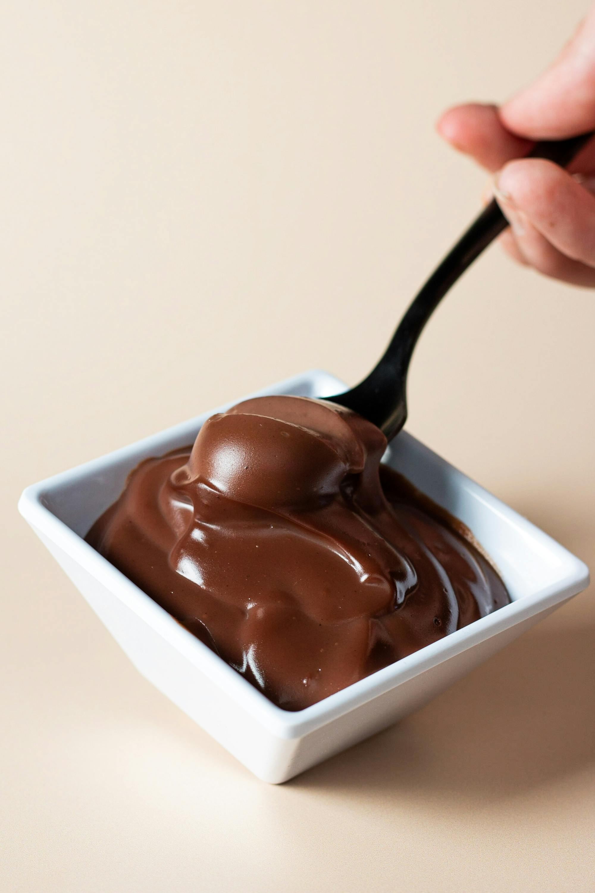
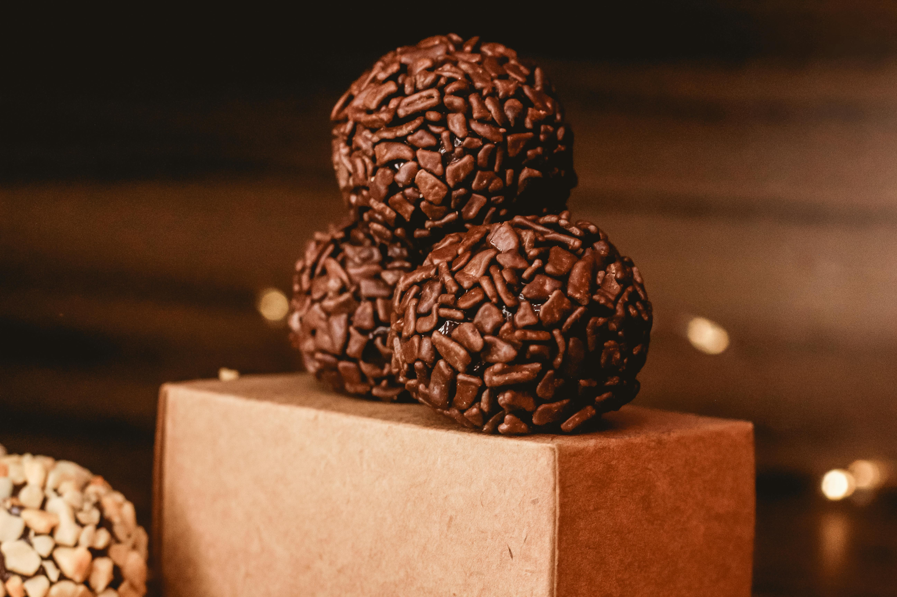
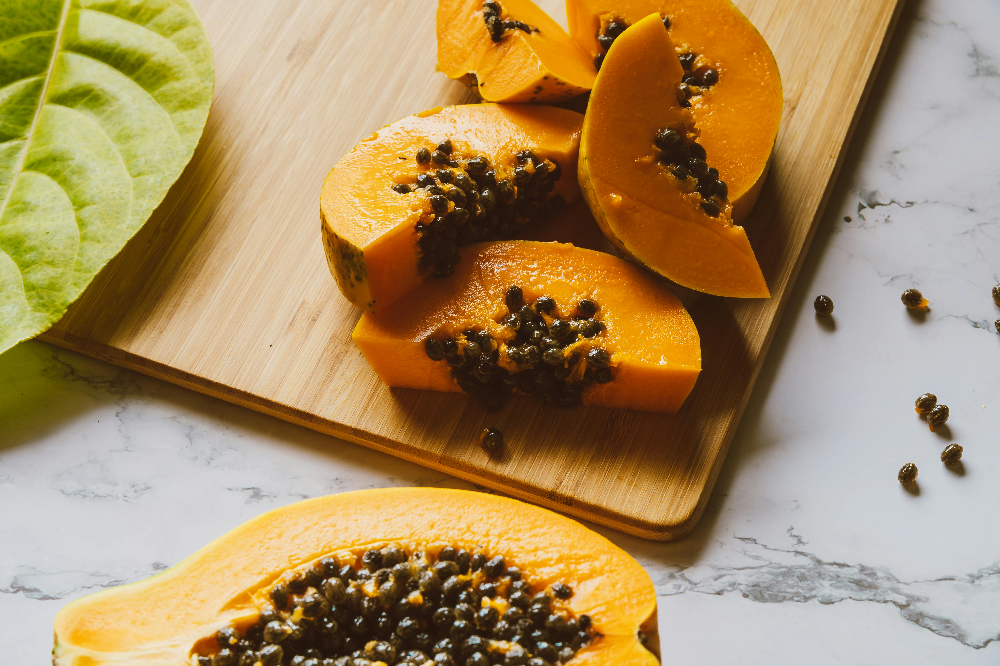
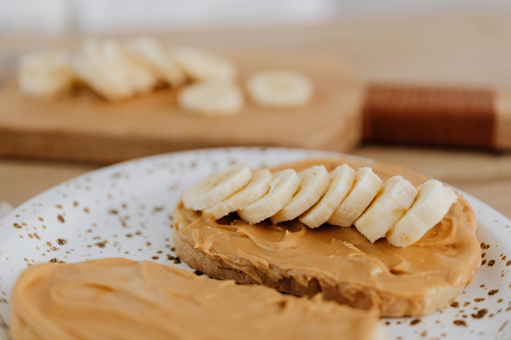

Receitas de Sobremesas Rápidas e Fáceis

Mousse de Chocolate
Uma sobremesa clássica e deliciosa, pronta em poucos minutos.

Pudim no Micro-ondas
Um pudim rápido feito diretamente no micro-ondas, sem complicações.

Brigadeiro de Micro-ondas
O clássico brigadeiro, pronto em minutos no micro-ondas.

Creme de Papaya & Cassis
Uma sobremesa refrescante e sofisticada feita com mamão papaya.

Torrada com Pasta de Amendoim
Uma combinação deliciosa e nutritiva para um lanche rápido.